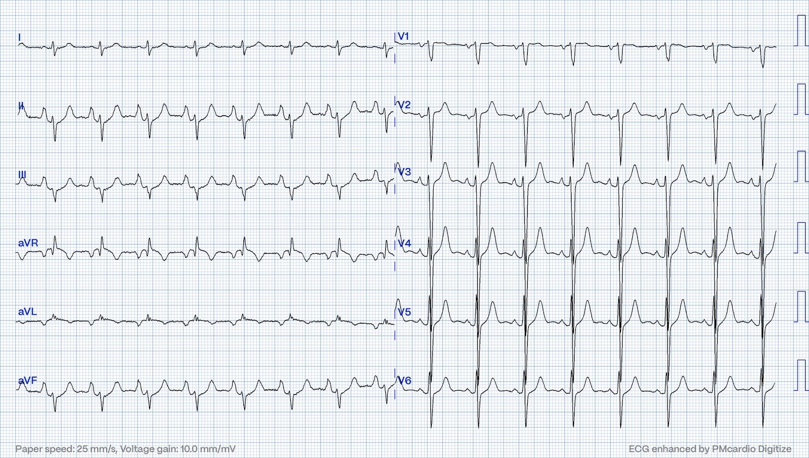
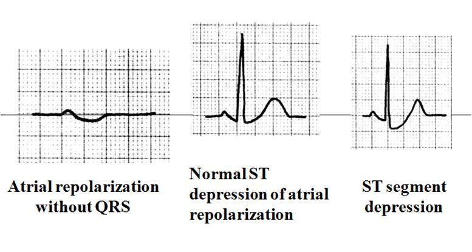
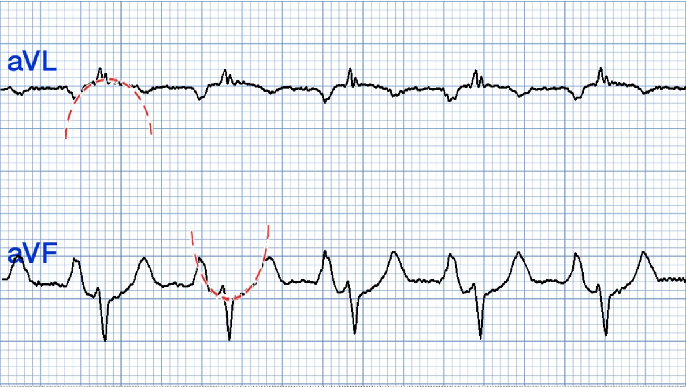
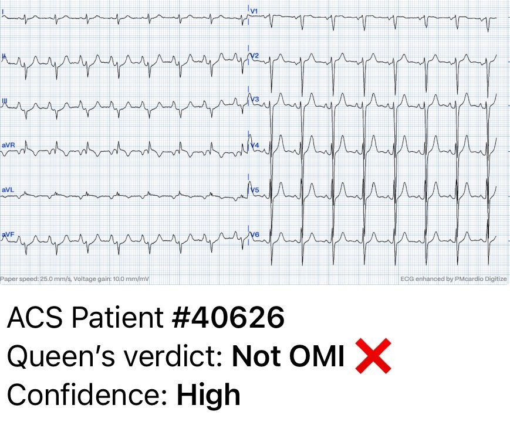
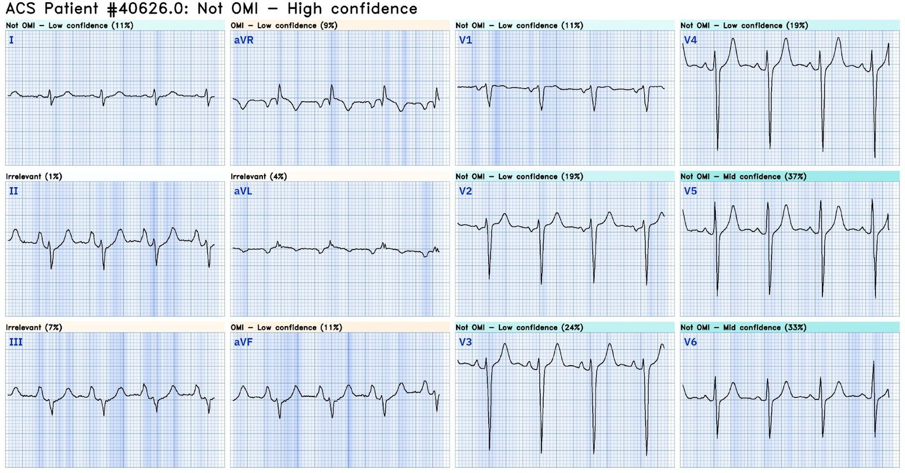
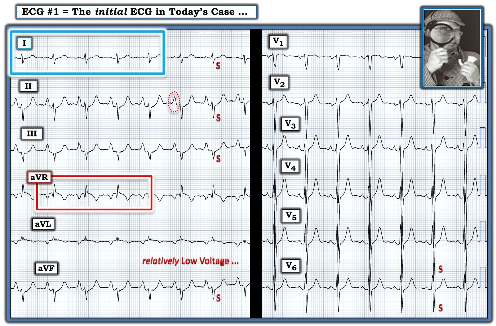

31/05/2024 — Có phải tất cả “ST chênh xuống” này đều do thiếu máu cục bộ?
Bản dịch tiếng Việt của bài "Is all this “ST Depression” due to ischemia?" – Dr. Smith’s ECG Blog. Giữ nguyên toàn bộ 11 hình ảnh của bản gốc.
Bài viết của Magnus Nossen, có một số chỉnh sửa của Smith
Điện tâm đồ này được đội cấp cứu ngoài viện (EMS) truyền điện tử về để đánh giá. Bệnh nhân là nữ, ngoài 70 tuổi, khó chịu ở ngực và khó thở. Bạn diễn giải các thay đổi ST trên điện tâm đồ này thế nào? Bạn có nhận bệnh nhân này để chụp mạch vành cấp cứu dựa trên các thay đổi điện tâm đồ không? Điện tâm đồ có thể hiện các dấu hiệu của OMI STEMI âm tính không? Bạn sẽ xử trí bệnh nhân này thế nào?


Điện tâm đồ cho thấy nhịp xoang với tần số thất ngay dưới 100 nhịp/phút. Có đoạn ST chênh xuống nhẹ dạng lõm ở các chuyển đạo dưới, kèm ST chênh lên rất ít ở chuyển đạo aVL, không đạt tiêu chuẩn milimét. Cũng đáng lưu ý là tăng tiến sóng R chậm ở các chuyển đạo trước, không có sóng Q đáng kể. Sóng P nổi bật. Đánh giá bệnh nhân này tại một trung tâm PCI là hợp lý, vì bạn phải chứng minh rằng các thay đổi điện tâm đồ này không phải do thiếu máu cục bộ. Tôi nhận bệnh nhân để đánh giá tại cơ sở PCI của chúng tôi nhưng không kích hoạt phòng thông tim, vì tôi không cho rằng các thay đổi điện tâm đồ thể hiện OMI.
Smith: Sóng P ở chuyển đạo II cực kỳ nổi bật, gợi ý phì đại nhĩ phải và có thể áp lực tim phải cao.
ST chênh xuống có nhiều nguyên nhân khác nhau. Nguyên nhân có thể là nguyên phát (tức là thiếu máu cục bộ) hoặc thứ phát sau khử cực bất thường (ví dụ do tiền kích thích, BBB, nhịp tạo nhịp, LVH v.v.).
Ngoài ra, ST chênh xuống có thể do thuốc (ví dụ digoxin) hoặc rối loạn điện giải như hạ kali máu hay hạ magnesi máu. Thậm chí một số rối loạn di truyền hiếm gặp gây loạn nhịp như hội chứng Bundgaard cũng có thể có ST chênh xuống trên điện tâm đồ lúc nghỉ.
Bàn luận: Điện tâm đồ trong ca hôm nay không có vectơ ST chênh xuống điển hình của thiếu máu cục bộ dưới nội tâm mạc lan tỏa. Vectơ ST trong thiếu máu cục bộ dưới nội tâm mạc (SEI) thường có mức ST chênh xuống lớn nhất ở chuyển đạo II và V5, hướng về mỏm tim. (Vectơ ST chênh xuống hướng về II và V5). Thực tế, ST chênh xuống trên điện tâm đồ ca hôm nay rõ nhất ở các chuyển đạo có sóng P lớn nhất (!) chứ không phải ở các chuyển đạo có phức bộ QRS biên độ lớn nhất. Đây là một chỉ điểm rất mạnh cho thấy ST chênh xuống không phải do thiếu máu cục bộ mà liên quan đến kích thước và vectơ của sóng P.
Bệnh nhân được đánh giá ngay khi đến viện. Khám thực thể đáng chú ý có ran rít hai bên. Bà đã được biết có COPD nặng. Siêu âm tim tại giường không thấy rối loạn vận động thành.
Tổng hợp tất cả các dấu hiệu: khó thở, nhịp hơi nhanh, tăng tiến sóng R chậm, sóng S nổi bật ở các chuyển đạo bên và ST chênh xuống nhiều nhất ở nơi sóng P lớn nhất — tất cả đều hướng tới bệnh phổi là nguyên nhân của các dấu hiệu trên điện tâm đồ.
Tái cực nhĩ thường không nhận thấy được trên điện tâm đồ. Tuy nhiên, nếu có lớn nhĩ, tái cực nhĩ có thể trở nên nổi bật và có thể gây thay đổi đoạn ST. Hình A dưới đây cho thấy mối liên quan giữa sóng Ta và ST chênh xuống bình thường. Ở hình B dưới đây, tôi đã chồng một đường parabol chấm đỏ lên các phức bộ QRS và đoạn ST của chuyển đạo aVL và aVF để cho thấy sóng tái cực nhĩ ảnh hưởng đến đoạn ST như thế nào.
Hình A


Hình B


QoH (Queen of Hearts) đã đọc điện tâm đồ này ra sao?




Thật ấn tượng khi kết quả diễn giải là KHÔNG PHẢI OMI với độ tin cậy cao. Ở trên bạn có thể thấy tính năng giải thích (explainability). Mô hình AI không phản ứng với bất kỳ đoạn ST nào trên điện tâm đồ này.
You too can have the Queen of Hearts AI model (Bạn cũng có thể có mô hình AI Queen of Hearts)
Những điểm cần học:
- Điện tâm đồ thường có thể cho manh mối về bệnh phổi
- Sóng tái cực nhĩ (sóng Ta) có thể giống thiếu máu cục bộ.
- ST chênh xuống có nhiều nguyên nhân khác nhau ngoài thiếu máu cục bộ.

===================================
BÌNH LUẬN CỦA TÔI, bởi KEN GRAUER, MD (31/5/2024):
===================================
Tôi rất thích ca hôm nay của BS. Nossen — vì nó là một ví dụ tuyệt vời, trong đó chỉ cần biết không gì hơn việc bệnh nhân đến viện không chỉ vì đau ngực — mà còn vì khó thở cấp — đã giúp tôi chẩn đoán ngay lập tức bệnh phổi nặng thay vì bệnh mạch vành cấp.
- Trong số những câu nói tôi ưa thích nhất có câu sau: “Kinh nghiệm là Sai lầm”. Phần lớn những gì tôi học được qua nhiều thập kỷ nghiên cứu cách đọc điện tâm đồ là kết quả của những “sai lầm” đã mắc phải và rút kinh nghiệm từ đó. Vì vậy, tôi sẽ không bao giờ quên hồi còn là bác sĩ nội trú năm nhất (intern), sau rất nhiều ca phù phổi, tôi đã mặc định rằng bệnh nhân khó thở trước mặt mình lại thêm một bệnh nhân nữa cần lợi tiểu và các biện pháp chuẩn khác cho suy tim trái. Tôi đã chẩn đoán sai điện tâm đồ của bệnh nhân đó — điện tâm đồ vốn đang “cố” nói với tôi rằng thay vì suy tim trái — vấn đề là suy tim phải do bệnh phổi nặng kéo dài. Tôi đã cố gắng để không mắc lại sai lầm đó.
- Chúng ta không thường thấy RVH trên điện tâm đồ ở người lớn. Vì thế — rất dễ bỏ qua manh mối quan trọng này của suy tim phải. Thông điệp lâm sàng thiết yếu này được ca hôm nay truyền tải một cách tuyệt vời.
Để rõ ràng, trong Hình 1 — tôi đã đánh dấu một loạt dấu hiệu điện tâm đồ tinh tế mà khi xét cùng nhau ở một bệnh nhân đến viện vì khó thở cấp — sẽ khiến bạn ngay lập tức nghi ngờ bệnh phổi nặng kéo dài thay vì bệnh mạch vành cấp là lời giải thích khả dĩ nhất cho điện tâm đồ hôm nay.


Chẩn đoán RVH / Bệnh phổi nặng trên điện tâm đồ:
Để ôn lại — tôi trích một số đoạn trong bình luận của tôi ở bài ngày 12 tháng Hai năm 2023 trên Dr. Smith’s ECG Blog.
- Một trong những chẩn đoán điện tâm đồ khó nhất là RVH (phì đại thất phải – Right Ventricular Hypertrophy). Khi nói vậy — tôi không nói đến những ca RVH rõ ràng trên điện tâm đồ — trong đó QRS có thời gian bình thường (tức là không có RBBB và không có WPW) — và có RAD (trục lệch phải – Right Axis Deviation) rõ rệt + một sóng R chiếm ưu thế ở chuyển đạo V1.
- Điểm MẤU CHỐT: Các dấu hiệu điện tâm đồ cực đoan là RAD rõ rệt và sóng R chiếm ưu thế ở chuyển đạo V1 thường không gặp ở người lớn bị RVH cho đến giai đoạn muộn của bệnh — và đôi khi ngay cả lúc đó cũng không. Thay vào đó — tôi muốn nói đến những thể RVH kém rõ ràng hơn, nhưng vẫn có ý nghĩa lâm sàng, mà rất dễ bị bỏ qua!
ĐIỂM THEN CHỐT (PEARL) #1: Hãy xem xét những điều sau:
- RVH dễ chẩn đoán ở trẻ nhũ nhi và trẻ nhỏ hơn nhiều so với người lớn. Đó là vì kích thước (và khối lượng) tương đối của RV (thất phải – Right Ventricle) so với LV (thất trái – Left Ventricle) — ở trẻ nhũ nhi và trẻ nhỏ lớn hơn nhiều so với người lớn. Ngược lại, khi đến tuổi trưởng thành — LV bình thường có thể dày gấp tới 3 lần (với khối lượng gấp tới 10 lần) RV bình thường. Vì thế — ở người lớn thường cần RV tăng kích thước rõ rệt — trước khi thấy sóng R chiếm ưu thế ở chuyển đạo V1.
- Ngược lại — tỷ lệ R>S (tức là chiều cao sóng R lớn hơn độ sâu sóng S) ở chuyển đạo V1 — vẫn là dấu hiệu thường gặp và bình thường ở trẻ em cho đến khoảng ~5 tuổi!
- Tương tự (tức là do ưu thế bình thường của LV) — RAD rõ rệt trên mặt phẳng trán là một dấu hiệu tương đối muộn của RVH ở người lớn.
ĐIỂM THEN CHỐT (PEARL) #2: Hãy coi chẩn đoán RVH trên điện tâm đồ là một chẩn đoán “thám tử”. Không một manh mối đơn lẻ nào giải được bí ẩn. Thay vào đó — xác định RVH là bằng suy luận (tức là bằng cách nhận ra một tổ hợp các dấu hiệu điện tâm đồ ở một bệnh nhân có tiền sử lâm sàng phù hợp với RVH).
- Tôi đã nhiều lần trình bày quan điểm của tôi về chẩn đoán RVH trên điện tâm đồ trên Dr. Smith’s ECG Blog (xem bình luận của tôi ở cuối trang trong các bài ngày 6 tháng Ba năm 2022 và ngày 1 tháng Chín năm 2020, chỉ kể ra 2 bài).
- Để ôn lại — bản tóm tắt dễ dùng của tôi về RVH trên điện tâm đồ có trong PHẦN BỔ SUNG bên dưới (ở Hình 2 đến Hình 5).
Điều này áp dụng vào ca hôm nay như thế nào?
Để rõ ràng, trong Hình 1 — tôi đã đánh dấu điện tâm đồ ban đầu của ca hôm nay.
- ĐIỂM THEN CHỐT (PEARL) #3: Như thường lệ — bệnh sử là MẤU CHỐT! Bệnh nhân hôm nay đến viện không chỉ vì đau ngực — mà còn vì khó thở. Về sau trong ca bệnh, chúng ta biết rằng bà quả thật có bệnh phổi nặng kéo dài — do đó phù hợp với một bệnh nhân có thể có RVH.
- Có RAA (bất thường nhĩ phải – Right Atrial Abnormality) rõ rệt! Sóng P cao, nhọn và đỉnh sắc ở mỗi chuyển đạo dưới (dễ dàng vượt tiêu chuẩn điện thế cao ≥2,5 mm) — xác lập rõ ràng sự hiện diện của RAA, mà ở một bệnh nhân đến viện vì khó thở cấp thì cho thấy lớn nhĩ phải.
- ĐIỂM THEN CHỐT (PEARL) #4: Trong y khoa chỉ có 1 bệnh lý gây lớn nhĩ phải mà không đồng thời gây RVH. Bệnh lý đó là hẹp van ba lá, vốn hiếm gặp. Vì vậy, dấu hiệu RAA trên điện tâm đồ không phải do thể trạng gầy — là một manh mối giả định quan trọng cho sự hiện diện của RVH.
Các dấu hiệu điện tâm đồ khác phù hợp với RVH trong Hình 1:
Các dấu hiệu điện tâm đồ bổ sung ủng hộ RVH trong ca hôm nay tinh tế hơn nhiều so với RAA rõ rệt mà tôi mô tả ở trên. Điều này minh họa khái niệm MẤU CHỐT đã nêu ở trên trong ĐIỂM THEN CHỐT #2 — đó là RVH trên điện tâm đồ thường chỉ được nhận ra như một chẩn đoán “thám tử”!
- Trục: Dù không có RAD thực sự — phức bộ QRS bình thường ở chuyển đạo I là dương. Biên độ thấp của sóng R mà chúng ta thấy ở chuyển đạo I trong Hình 1 — kèm theo sóng S có diện tích bằng (nếu không nói là lớn hơn) so với sóng R ở chuyển đạo này là một dấu hiệu không thường gặp.
- Sóng S ở các chuyển đạo I, II và III: Dấu hiệu này liên quan đến trục QRS trung bình trên bản ghi hôm nay. Việc thấy sóng S ở mỗi chuyển đạo chi chuẩn (như chúng ta thấy trong Hình 1) tự nó đã gợi ý bệnh phổi đáng kể — cũng như trục QRS gần như không xác định do đó mà có.
- Điện thế tương đối thấp: Dù không đạt tiêu chuẩn chặt chẽ của điện thế thấp (tức là cả 6 chuyển đạo chi ≤5 mm) — biên độ QRS nhìn chung có vẻ giảm ở các chuyển đạo chi trong Hình 1.
- Sóng S tồn tại dai dẳng: Bình thường biên độ sóng R tăng dần khi đi qua các chuyển đạo trước tim (khi hoạt động điện di chuyển sang trái, nơi có thất trái lớn hơn). Biên độ sóng R thường đạt đỉnh ở V4 hoặc V5 — rồi giảm xuống (ở V5,V6). Bình thường hoàn toàn không có sóng S ở V5,V6 — vì đến thời điểm này của quá trình khử cực, mọi hoạt động điện đều đang đi sang trái. Nếu ở V5,V6 vẫn còn sóng S lớn hơn mức rất nhỏ — điều này có thể là hậu quả của hoạt động điện hướng sang phải đáng kể vẫn đang tiếp diễn.
- Chuyển đạo aVR: Quá tải thất phải cấp có thể biểu hiện trên điện tâm đồ bằng ST chênh lên ở chuyển đạo aVR (đặc biệt khi sóng R ở chuyển đạo aVR cao, như trong Hình 1).
XIN NHẤN MẠNH: Xét riêng lẻ — không dấu hiệu điện tâm đồ nào nêu trên tự nó đủ để chẩn đoán RVH. Tuy nhiên, khi xét chung ở bệnh nhân này đến khám vì khó thở cấp — sự kết hợp các dấu hiệu điện tâm đồ này gợi ý mạnh mẽ bệnh phổi đáng kể (và nhiều khả năng có RVH).
==================================
Vượt ra ngoài phần cốt lõi:
ĐIỂM THEN CHỐT (PEARL) #5: Trong Bình luận của tôi ở bài đăng ngày 17 tháng Sáu năm 2018 trên Dr. Smith’s ECG Blog — tôi đã nêu sự hiện diện của dấu hiệu Schamroth (Schamroth’s Sign), trong đó sự hiện diện của một “vectơ rỗng” gần như hoàn toàn ở chuyển đạo I chuẩn (tức là sóng P, phức bộ QRS và sóng T đều có biên độ rất thấp) — là một chỉ điểm tinh tế, độ nhạy thấp nhưng đôi khi rất hữu ích, của bệnh phổi nặng và lâu năm.
- Dù hoàn toàn thừa nhận rằng phức bộ QRST ở chuyển đạo I trong Hình 1 không đạt tiêu chuẩn kích thước milimét rất thấp của dấu hiệu Schamroth — Chẳng phải phức bộ QRST ở chuyển đạo I này khá nhỏ sao? Tôi đã nắm lấy dấu hiệu tinh tế này như thêm một manh mối nữa hướng tới chẩn đoán nhiều khả năng là bệnh phổi nặng chứ không phải OMI trong ca hôm nay.
===============================
PHẦN BỔ SUNG:
- “Quan điểm của tôi” về chẩn đoán RVH trên điện tâm đồ được trình bày trong 4 hình sau (trích từ Grauer K: ECG-2014 e-Pub).